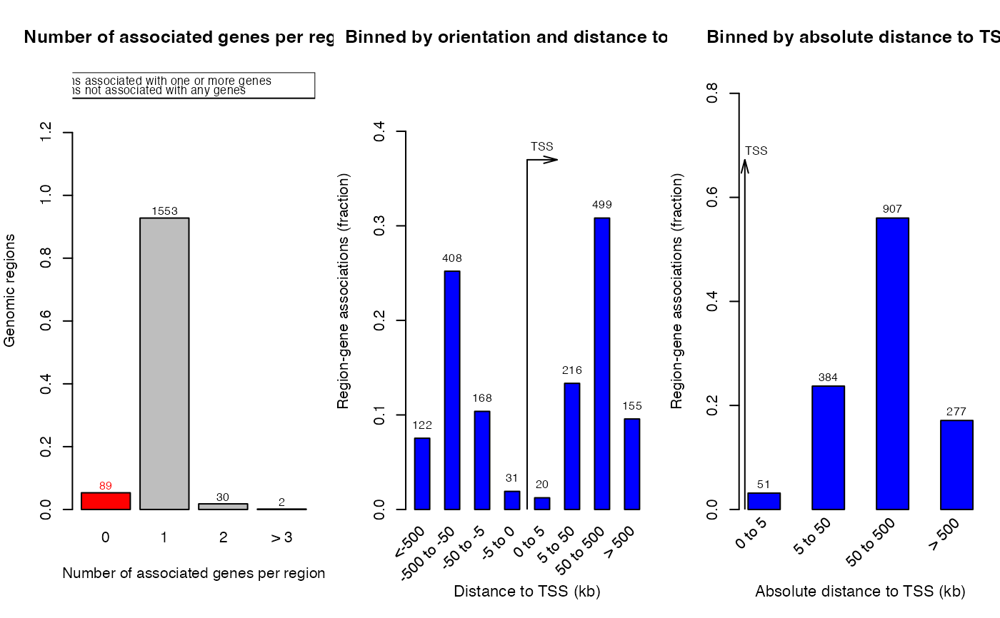
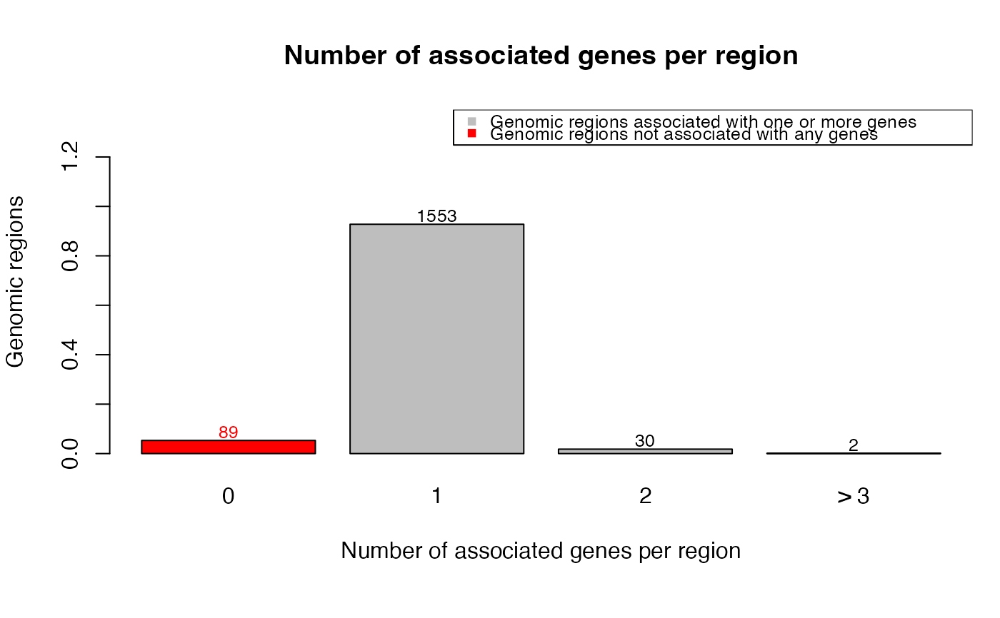
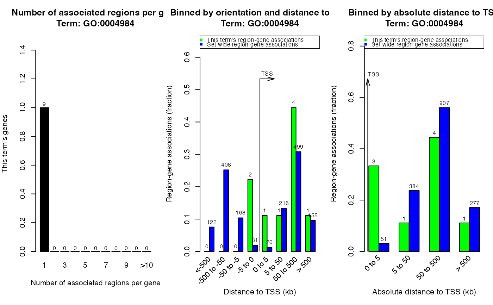

plotRegionGeneAssociations-GreatJob-method.RdPlot region-gene associations
# S4 method for GreatJob
plotRegionGeneAssociations(object, ontology = NULL, term_id = NULL, which_plot = 1:3,
request_interval = 10, max_tries = 100, verbose = great_opt$verbose)A GreatJob-class object returned by submitGreatJob.
A single ontology names. Valid values are in availableOntologies.
Term id in the selected ontology
Which plots to draw? The value should be in 1, 2, 3. See "Details" section for explanation.
Time interval for two requests. Default is 300 seconds.
Maximal times for automatically reconnecting GREAT web server.
Whether to show messages.
There are following figures:
Association between regions and genes (which_plot = 1).
Distribution of distance to TSS (which_plot = 2).
Distribution of absolute distance to TSS (which_plot = 3).
If ontology and term_id are set, only regions and genes corresponding to
selected ontology term will be used. Valid value for ontology is in
availableOntologies and valid value for term_id is from 'id' column
in the table which is returned by getEnrichmentTables.
job = readRDS(system.file("extdata", "GreatJob.rds", package = "rGREAT"))
plotRegionGeneAssociations(job)

plotRegionGeneAssociations(job, which_plot = 1)

# Do not use other term_id for this example, or you need to generate a new `job` object.
plotRegionGeneAssociations(job, ontology = "GO Molecular Function",
term_id = "GO:0004984")
